Candidate List 20260609 Previous Day Next Day Section 1: New Sources (age<1d) Cosmological Afterglow
Section 2: Old (1-5d) sources observed last night placeholder
Section 1: New Afterglow/FBOT Cands Last Night (3)
1. ZTF26abapyhw (FBOT?) [Back to Top] [Share] [Trigger Swift] [Fritz ] [Lasair ]RA, Dec: 181.74845, 7.63955 12h 6m59.63s, 7d38m22.39sGalactic (l, b): 272.50098, 67.84592 ext(g-r) = 0.02peak abs mag = -23.50 LegacySurvey: 1 sources in 3 arcsec Closest: d = 1.87 arcsec, 8.3 deg (east of north) photoz=0.41 (68% bounds 0.27, 1.95), type=REX peak abs mag = -23.62 (68% bounds -22.55, -27.72)
2. ZTF26abaqiwc (Afterglow?) [Back to Top] [Share] [Trigger Swift] [Fritz ] [Lasair ]RA, Dec: 185.24398, 11.32229 12h20m58.55s, 11d19m20.23sGalactic (l, b): 277.10114, 72.64838 ext(g-r) = 0.039LegacySurvey: 1 sources in 3 arcsec Closest: d = 3.18 arcsec, 262.4 deg (east of north) photoz=1.01 (68% bounds 0.73, 1.28), type=PSF peak abs mag = -23.63 (68% bounds -22.77, -24.26) Consistent with synchrotron, g-r>0!
3. ZTF26abarkhv (Afterglow?) [Back to Top] [Share] [Trigger Swift] [Fritz ] [Lasair ]RA, Dec: 219.14405, -12.22938 14h36m34.57s, -12d-13m-45.78sGalactic (l, b): 339.28196, 43.09979 WARNING: 2.93 deg from ecliptic plane ext(g-r) = 0.086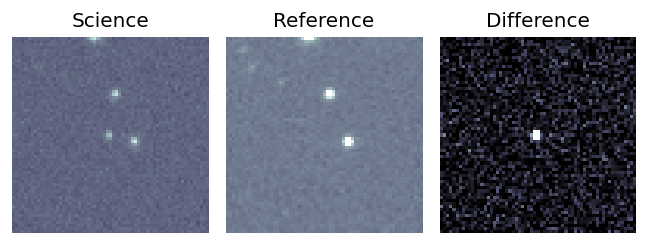
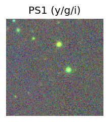
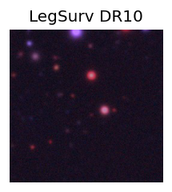
LegacySurvey: 1 sources in 3 arcsec Closest: d = 4.82 arcsec, 208.7 deg (east of north) photoz=0.8 (68% bounds 0.67, 0.96), type=PSF peak abs mag = -25.07 (68% bounds -24.57, -25.56) 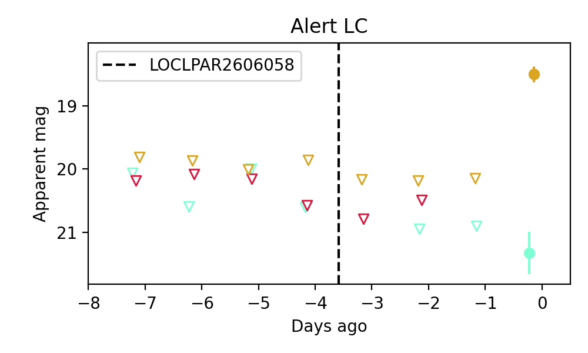
Consistent with synchrotron, g-r>0!
Section 2: Older Sources Observed Last Night (67)
0. ZTF26aazepit (Afterglow?) [Back to Top] [Share] [Trigger Swift] [Fritz ] [Lasair ]RA, Dec: 186.10427, 28.78656 12h24m25.02s, 28d47m11.63sGalactic (l, b): 195.83279, 83.8081 ext(g-r) = 0.026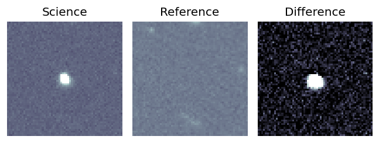
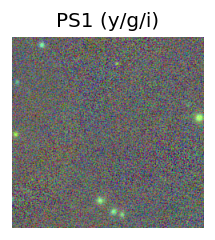
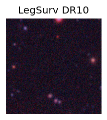
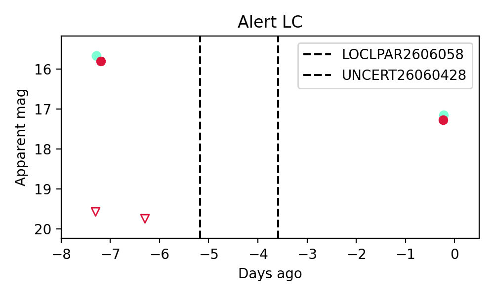
1. ZTF26aazjnrk (FBOT?) [Back to Top] [Share] [Trigger Swift] [Fritz ] [Lasair ]RA, Dec: 209.38824, 23.46099 13h57m33.18s, 23d27m39.55sGalactic (l, b): 22.79149, 74.62597 ext(g-r) = 0.021peak abs mag = -22.23 LegacySurvey: 1 sources in 3 arcsec Closest: d = 0.40 arcsec, 204.7 deg (east of north) photoz=0.1 (68% bounds 0.05, 0.73), type=EXP peak abs mag = -18.86 (68% bounds -17.46, -23.8) Consistent with synchrotron, g-r>0!
2. ZTF26aazpkda (Afterglow?) [Back to Top] [Share] [Trigger Swift] [Fritz ] [Lasair ]RA, Dec: 235.51013, 8.30986 15h42m2.43s, 8d18m35.50sGalactic (l, b): 16.0679, 45.52973 ext(g-r) = 0.047peak abs mag = -17.96
3. ZTF26aaztkuj (FBOT?) [Back to Top] [Share] [Trigger Swift] [Fritz ] [Lasair ]RA, Dec: 220.52591, -19.93454 14h42m6.22s, -19d-56m-4.34sGalactic (l, b): 335.51097, 35.84096 WARNING: -4.0 deg from ecliptic plane ext(g-r) = 0.113LegacySurvey: 1 sources in 3 arcsec Closest: d = 2.59 arcsec, 75.2 deg (east of north) photoz=0.15 (68% bounds 0.03, 0.27), type=PSF peak abs mag = -20.51 (68% bounds -16.76, -21.93) Consistent with synchrotron, g-r>0!
4. ZTF26aaztwcq (Afterglow?) [Back to Top] [Share] [Trigger Swift] [Fritz ] [Lasair ]RA, Dec: 239.32552, 11.28156 15h57m18.13s, 11d16m53.63sGalactic (l, b): 22.26617, 43.65936 ext(g-r) = 0.057peak abs mag = -17.81 peak abs mag = -18.19 LegacySurvey: 1 sources in 3 arcsec Closest: d = 0.19 arcsec, 265.8 deg (east of north) photoz=0.06 (68% bounds 0.04, 0.07), type=EXP peak abs mag = -17.71 (68% bounds -16.94, -18.23)
5. ZTF26aazuwhc (FBOT?) [Back to Top] [Share] [Trigger Swift] [Fritz ] [Lasair ]RA, Dec: 251.98677, -25.02912 16h47m56.83s, -25d-1m-44.85sGalactic (l, b): 355.81474, 12.76066 WARNING: -2.6 deg from ecliptic plane ext(g-r) = 0.397PS1: 1 source in 3 arcsec Closest: d = 2.91 arcsec photoz=0.07+/-0.01 peak abs mag = -20.30 Consistent with synchrotron, g-r>0!
6. ZTF26aazxowv (FBOT?) [Back to Top] [Share] [Trigger Swift] [Fritz ] [Lasair ]RA, Dec: 250.97368, 67.79103 16h43m53.68s, 67d47m27.72sGalactic (l, b): 99.28307, 36.85932 ext(g-r) = 0.035LegacySurvey: 1 sources in 3 arcsec Closest: d = 1.37 arcsec, 256.4 deg (east of north) photoz=0.2 (68% bounds 0.15, 0.27), type=EXP peak abs mag = -20.1 (68% bounds -19.48, -20.83) Consistent with synchrotron, g-r>0!
7. ZTF26ababons (Afterglow?) [Back to Top] [Share] [Trigger Swift] [Fritz ] [Lasair ]RA, Dec: 268.8878, 6.194 17h55m33.07s, 6d11m38.39sGalactic (l, b): 32.13464, 15.23774 ext(g-r) = 0.232peak abs mag = -16.44 PS1: 1 source in 3 arcsec Closest: d = 0.07 arcsec photoz=0.04+/-0.01 peak abs mag = -17.48 Consistent with synchrotron, g-r>0!
8. ZTF26abaceqi (Afterglow?) [Back to Top] [Share] [Trigger Swift] [Fritz ] [Lasair ]RA, Dec: 282.00774, 29.81171 18h48m1.86s, 29d48m42.15sGalactic (l, b): 59.64438, 13.77867 ext(g-r) = 0.162peak abs mag = -18.94 PS1: 1 source in 3 arcsec Closest: d = 1.63 arcsec photoz=0.06+/-0.00 peak abs mag = -18.35 Consistent with synchrotron, g-r>0!
9. ZTF26abaceta (Afterglow?) [Back to Top] [Share] [Trigger Swift] [Fritz ] [Lasair ]RA, Dec: 285.81478, 8.63593 19h 3m15.55s, 8d38m9.36sGalactic (l, b): 41.96015, 1.32385 ext(g-r) = 3.628PS1: 1 source in 3 arcsec Closest: d = 0.58 arcsec photoz=0.43+/-0.09 peak abs mag = -28.42
10. ZTF26abafuvi (FBOT?) [Back to Top] [Share] [Trigger Swift] [Fritz ] [Lasair ]RA, Dec: 223.39722, -15.40669 14h53m35.33s, -15d-24m-24.07sGalactic (l, b): 341.46625, 38.15968 WARNING: 1.13 deg from ecliptic plane ext(g-r) = 0.097LegacySurvey: 1 sources in 3 arcsec Closest: d = 0.56 arcsec, 178.5 deg (east of north) photoz=0.45 (68% bounds 0.14, 1.08), type=REX peak abs mag = -22.28 (68% bounds -19.47, -24.6) Consistent with synchrotron, g-r>0!
11. ZTF26abafxlk (FBOT?) [Back to Top] [Share] [Trigger Swift] [Fritz ] [Lasair ]RA, Dec: 244.48424, 14.40345 16h17m56.22s, 14d24m12.41sGalactic (l, b): 28.95435, 40.43397 ext(g-r) = 0.06peak abs mag = -18.53 LegacySurvey: 1 sources in 3 arcsec Closest: d = 1.62 arcsec, 334.5 deg (east of north) photoz=0.15 (68% bounds 0.06, 0.74), type=EXP peak abs mag = -19.81 (68% bounds -17.67, -23.79) Consistent with synchrotron, g-r>0!
12. ZTF26abagkaa (FBOT?) [Back to Top] [Share] [Trigger Swift] [Fritz ] [Lasair ]RA, Dec: 259.76876, 56.36176 17h19m4.50s, 56d21m42.34sGalactic (l, b): 84.48777, 34.95839 ext(g-r) = 0.022peak abs mag = -21.09 LegacySurvey: 1 sources in 3 arcsec Closest: d = 0.68 arcsec, 9.9 deg (east of north) photoz=0.12 (68% bounds 0.09, 0.16), type=EXP peak abs mag = -18.95 (68% bounds -18.26, -19.59)
13. ZTF26abamfqk (FBOT?) [Back to Top] [Share] [Trigger Swift] [Fritz ] [Lasair ]RA, Dec: 215.16164, 42.83089 14h20m38.79s, 42d49m51.21sGalactic (l, b): 79.66383, 66.04371 ext(g-r) = 0.011peak abs mag = -19.22 peak abs mag = -19.26 LegacySurvey: 1 sources in 3 arcsec Closest: d = 1.76 arcsec, 173.6 deg (east of north) photoz=0.36 (68% bounds 0.25, 0.59), type=REX peak abs mag = -21.58 (68% bounds -20.65, -22.9) Consistent with synchrotron, g-r>0!
14. ZTF26abamnrt (Afterglow?) [Back to Top] [Share] [Trigger Swift] [Fritz ] [Lasair ]RA, Dec: 247.04328, 35.70161 16h28m10.39s, 35d42m5.79sGalactic (l, b): 57.61745, 43.55321 ext(g-r) = 0.017peak abs mag = -19.50 peak abs mag = -18.88 LegacySurvey: 1 sources in 3 arcsec Closest: d = 1.78 arcsec, 47.7 deg (east of north) photoz=0.13 (68% bounds 0.11, 0.15), type=SER peak abs mag = -19.07 (68% bounds -18.6, -19.47)
15. ZTF26abamtdw (FBOT?) [Back to Top] [Share] [Trigger Swift] [Fritz ] [Lasair ]RA, Dec: 271.20629, 50.23451 18h 4m49.51s, 50d14m4.25sGalactic (l, b): 77.87381, 27.74177 ext(g-r) = 0.049LegacySurvey: 1 sources in 3 arcsec Closest: d = 1.71 arcsec, 1.0 deg (east of north) photoz=0.32 (68% bounds 0.25, 0.47), type=EXP peak abs mag = -21.3 (68% bounds -20.62, -22.27)
16. ZTF26abamtnh (Afterglow?FBOT?) [Back to Top] [Share] [Trigger Swift] [Fritz ] [Lasair ]RA, Dec: 277.98787, -17.38276 18h31m57.09s, -17d-22m-57.94sGalactic (l, b): 15.26601, -3.67506 ext(g-r) = 0.824PS1: 1 source in 3 arcsec Closest: d = 1.28 arcsec photoz=0.09+/-0.04 peak abs mag = -21.57
17. ZTF26abamuti (Afterglow?) [Back to Top] [Share] [Trigger Swift] [Fritz ] [Lasair ]RA, Dec: 300.21353, 40.72116 20h 0m51.25s, 40d43m16.19sGalactic (l, b): 76.31559, 5.52513 ext(g-r) = 0.459
18. ZTF26abantqh (Afterglow?) [Back to Top] [Share] [Trigger Swift] [Fritz ] [Lasair ]RA, Dec: 269.3107, -19.85661 17h57m14.57s, -19d-51m-23.80sGalactic (l, b): 9.1588, 2.36247 WARNING: 3.58 deg from ecliptic plane ext(g-r) = 2.173PS1: 1 source in 3 arcsec Closest: d = 2.77 arcsec photoz=0.98+/-0.21 peak abs mag = -29.10
19. ZTF26abapjds (FBOT?) [Back to Top] [Share] [Trigger Swift] [Fritz ] [Lasair ]RA, Dec: 136.9235, 14.14944 9h 7m41.64s, 14d 8m57.98sGalactic (l, b): 215.07768, 36.50133 WARNING: -2.24 deg from ecliptic plane ext(g-r) = 0.038LegacySurvey: 1 sources in 3 arcsec Closest: d = 0.69 arcsec, 49.8 deg (east of north) photoz=0.58 (68% bounds 0.41, 0.69), type=REX peak abs mag = -25.0 (68% bounds -24.09, -25.47)
20. ZTF26abappri (FBOT?) [Back to Top] [Share] [Trigger Swift] [Fritz ] [Lasair ]RA, Dec: 161.39744, 10.86534 10h45m35.39s, 10d51m55.24sGalactic (l, b): 235.61248, 56.25229 WARNING: 2.77 deg from ecliptic plane ext(g-r) = 0.032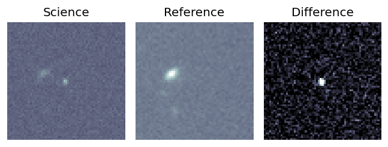
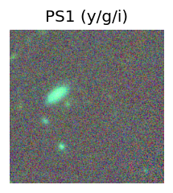
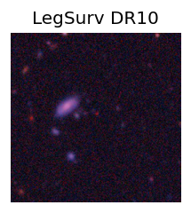
LegacySurvey: 1 sources in 3 arcsec Closest: d = 1.45 arcsec, 341.2 deg (east of north) photoz=0.84 (68% bounds 0.61, 1.07), type=PSF peak abs mag = -25.17 (68% bounds -24.33, -25.82) 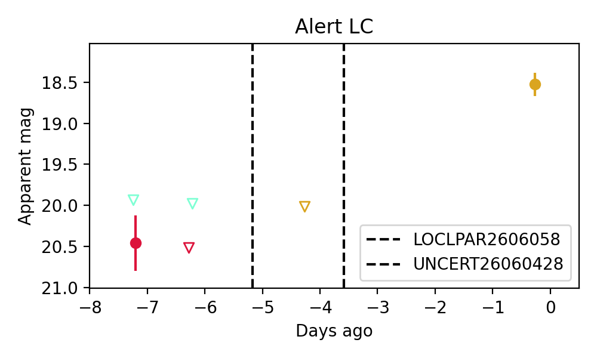
21. ZTF26abapxjx (Afterglow?) [Back to Top] [Share] [Trigger Swift] [Fritz ] [Lasair ]RA, Dec: 182.60046, 5.48806 12h10m24.11s, 5d29m17.00sGalactic (l, b): 276.80954, 66.25615 ext(g-r) = 0.017LegacySurvey: 1 sources in 3 arcsec Closest: d = 0.86 arcsec, 122.1 deg (east of north) photoz=0.18 (68% bounds 0.09, 0.25), type=EXP peak abs mag = -18.82 (68% bounds -17.24, -19.64) Consistent with synchrotron, g-r>0!
22. ZTF26abapzif (Afterglow?) [Back to Top] [Share] [Trigger Swift] [Fritz ] [Lasair ]RA, Dec: 224.74288, -19.46481 14h58m58.29s, -19d-27m-53.30sGalactic (l, b): 339.90059, 34.09542 WARNING: -2.39 deg from ecliptic plane ext(g-r) = 0.091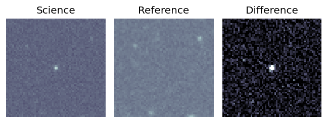
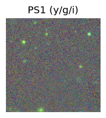
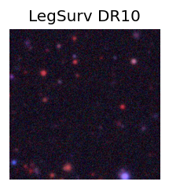
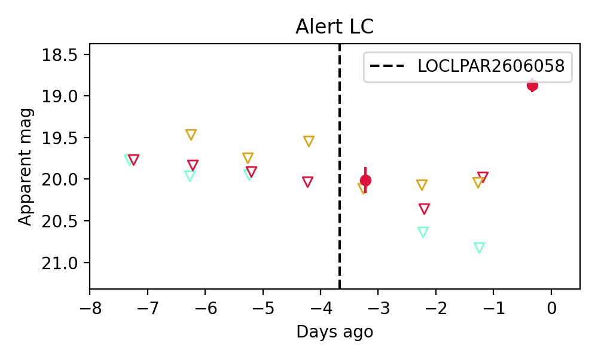
23. ZTF26abapzlg (Afterglow?) [Back to Top] [Share] [Trigger Swift] [Fritz ] [Lasair ]RA, Dec: 227.77171, -15.87301 15h11m5.21s, -15d-52m-22.85sGalactic (l, b): 345.32212, 35.25907 WARNING: 1.86 deg from ecliptic plane ext(g-r) = 0.1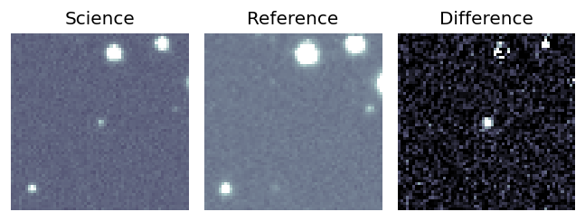
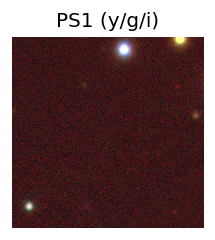
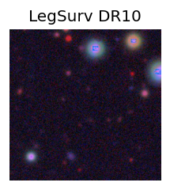
LegacySurvey: 1 sources in 3 arcsec Closest: d = 7.35 arcsec, 350.4 deg (east of north) photoz=0.86 (68% bounds 0.7, 1.01), type=PSF peak abs mag = -26.26 (68% bounds -25.69, -26.69) 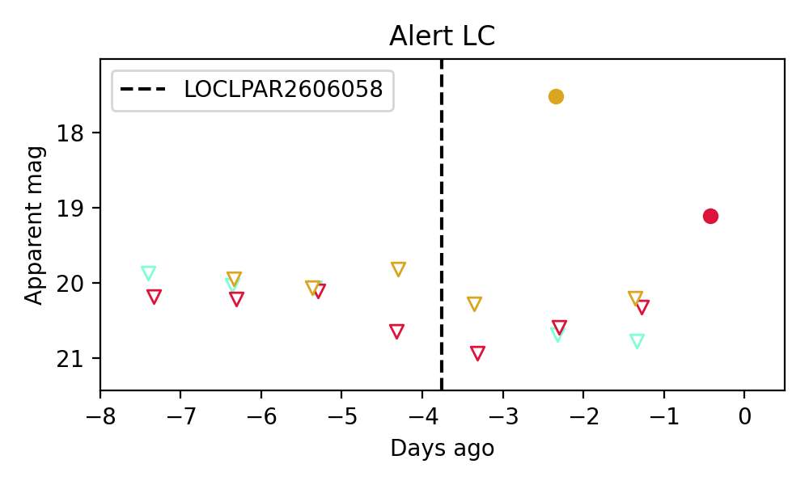
24. ZTF26abapzzv (FBOT?) [Back to Top] [Share] [Trigger Swift] [Fritz ] [Lasair ]RA, Dec: 232.34355, -7.07905 15h29m22.45s, -7d-4m-44.59sGalactic (l, b): 356.90419, 38.71618 ext(g-r) = 0.111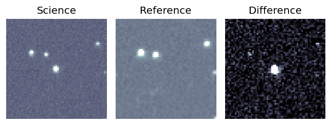
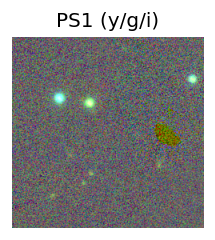
LegacySurvey: 1 sources in 3 arcsec Closest: d = 1.74 arcsec, 36.8 deg (east of north) photoz=0.99 (68% bounds 0.64, 1.24), type=REX peak abs mag = -27.02 (68% bounds -25.83, -27.62) 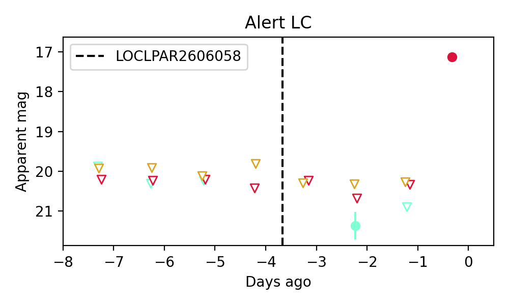
25. ZTF26abaqbnh (FBOT?) [Back to Top] [Share] [Trigger Swift] [Fritz ] [Lasair ]RA, Dec: 236.05185, -3.70875 15h44m12.44s, -3d-42m-31.50sGalactic (l, b): 3.24927, 38.17027 ext(g-r) = 0.227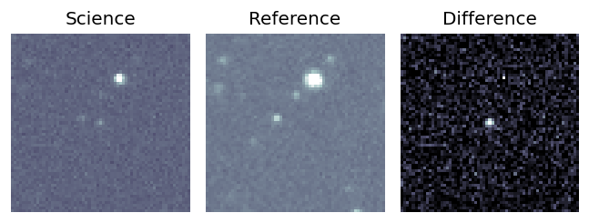
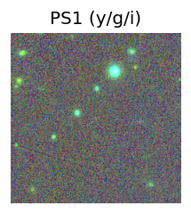
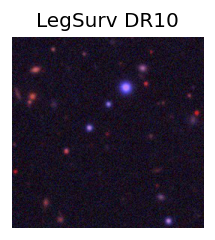
LegacySurvey: 1 sources in 3 arcsec Closest: d = 0.77 arcsec, 163.2 deg (east of north) photoz=1.13 (68% bounds 0.95, 1.29), type=PSF peak abs mag = -24.44 (68% bounds -23.97, -24.8) 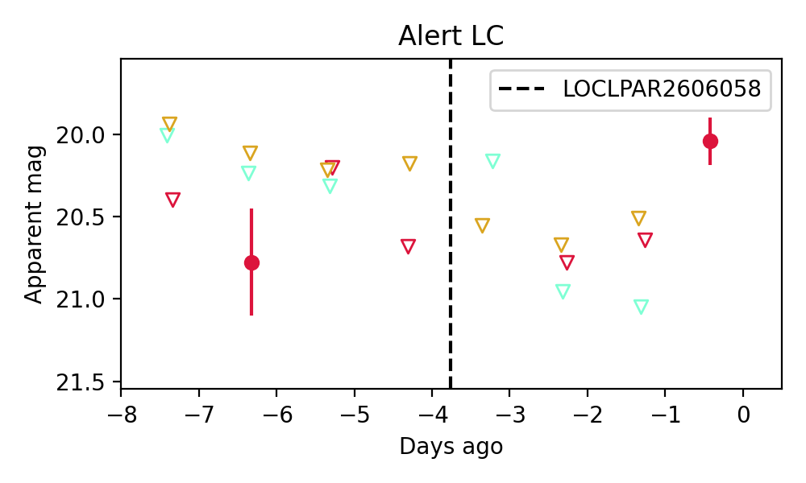
26. ZTF26abaqdiq (Afterglow?) [Back to Top] [Share] [Trigger Swift] [Fritz ] [Lasair ]RA, Dec: 234.56891, -5.78076 15h38m16.54s, -5d-46m-50.72sGalactic (l, b): 0.02778, 37.95884 ext(g-r) = 0.151LegacySurvey: 1 sources in 3 arcsec Closest: d = 3.55 arcsec, 266.3 deg (east of north) photoz=0.07 (68% bounds 0.02, 0.41), type=PSF peak abs mag = -17.79 (68% bounds -14.74, -22.14) Consistent with synchrotron, g-r>0!
27. ZTF26abaqfsh (Afterglow?) [Back to Top] [Share] [Trigger Swift] [Fritz ] [Lasair ]RA, Dec: 175.01771, 61.42938 11h40m4.25s, 61d25m45.77sGalactic (l, b): 137.25158, 53.66989 ext(g-r) = 0.037peak abs mag = -17.10 LegacySurvey: 1 sources in 3 arcsec Closest: d = 6.19 arcsec, 301.5 deg (east of north) photoz=0.04 (68% bounds 0.03, 0.04), type=SER peak abs mag = -16.82 (68% bounds -16.56, -17.08) Consistent with synchrotron, g-r>0!
28. ZTF26abaqgfv (FBOT?) [Back to Top] [Share] [Trigger Swift] [Fritz ] [Lasair ]RA, Dec: 187.84056, 12.20164 12h31m21.73s, 12d12m5.90sGalactic (l, b): 284.45317, 74.34868 ext(g-r) = 0.025peak abs mag = -18.54 LegacySurvey: 1 sources in 3 arcsec Closest: d = 1.97 arcsec, 215.4 deg (east of north) photoz=0.28 (68% bounds 0.19, 0.45), type=SER peak abs mag = -20.18 (68% bounds -19.26, -21.38)
29. ZTF26abaqglv (Afterglow?) [Back to Top] [Share] [Trigger Swift] [Fritz ] [Lasair ]RA, Dec: 184.47085, 9.86592 12h17m53.00s, 9d51m57.31sGalactic (l, b): 276.71984, 71.00997 ext(g-r) = 0.019LegacySurvey: 1 sources in 3 arcsec Closest: d = 7.10 arcsec, 136.0 deg (east of north) photoz=0.94 (68% bounds 0.5, 1.79), type=PSF peak abs mag = -23.35 (68% bounds -21.69, -25.06)
30. ZTF26abaqlrm (FBOT?) [Back to Top] [Share] [Trigger Swift] [Fritz ] [Lasair ]RA, Dec: 232.41274, -22.58961 15h29m39.06s, -22d-35m-22.59sGalactic (l, b): 344.34952, 27.28442 WARNING: -3.52 deg from ecliptic plane ext(g-r) = 0.175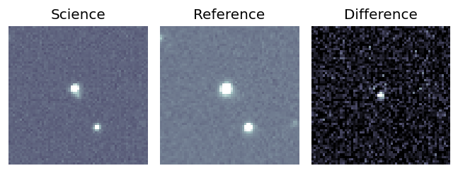
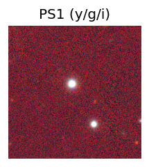
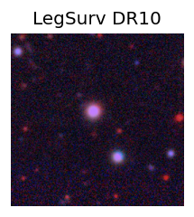
LegacySurvey: 1 sources in 3 arcsec Closest: d = 3.62 arcsec, 25.5 deg (east of north) photoz=0.12 (68% bounds 0.01, 0.77), type=PSF peak abs mag = -19.39 (68% bounds -14.56, -24.02) 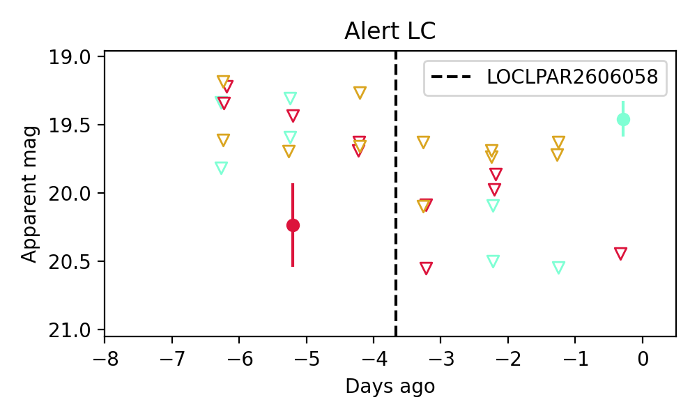
31. ZTF26abaqlui (Afterglow?) [Back to Top] [Share] [Trigger Swift] [Fritz ] [Lasair ]RA, Dec: 183.71572, 9.8137 12h14m51.77s, 9d48m49.33sGalactic (l, b): 274.72168, 70.65506 ext(g-r) = 0.018LegacySurvey: 1 sources in 3 arcsec Closest: d = 3.19 arcsec, 97.3 deg (east of north) photoz=0.96 (68% bounds 0.87, 1.05), type=EXP peak abs mag = -23.81 (68% bounds -23.55, -24.07)
32. ZTF26abaqlxc (Afterglow?) [Back to Top] [Share] [Trigger Swift] [Fritz ] [Lasair ]RA, Dec: 188.85233, 9.11539 12h35m24.56s, 9d 6m55.41sGalactic (l, b): 290.31011, 71.59326 ext(g-r) = 0.022LegacySurvey: 1 sources in 3 arcsec Closest: d = 4.79 arcsec, 55.9 deg (east of north) photoz=0.51 (68% bounds 0.43, 0.57), type=EXP peak abs mag = -21.57 (68% bounds -21.1, -21.88)
33. ZTF26abaqncq (Afterglow?) [Back to Top] [Share] [Trigger Swift] [Fritz ] [Lasair ]RA, Dec: 240.179, 0.98529 16h 0m42.96s, 0d59m7.05sGalactic (l, b): 11.14724, 37.66784 ext(g-r) = 0.116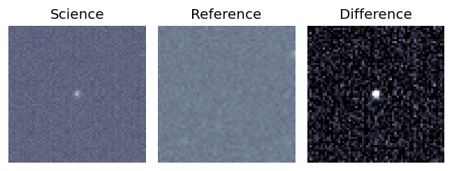
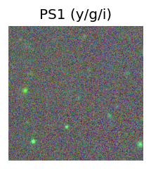
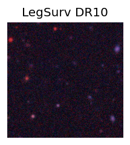
LegacySurvey: 1 sources in 3 arcsec Closest: d = 2.60 arcsec, 204.8 deg (east of north) photoz=0.53 (68% bounds 0.38, 0.68), type=PSF peak abs mag = -24.48 (68% bounds -23.65, -25.14) 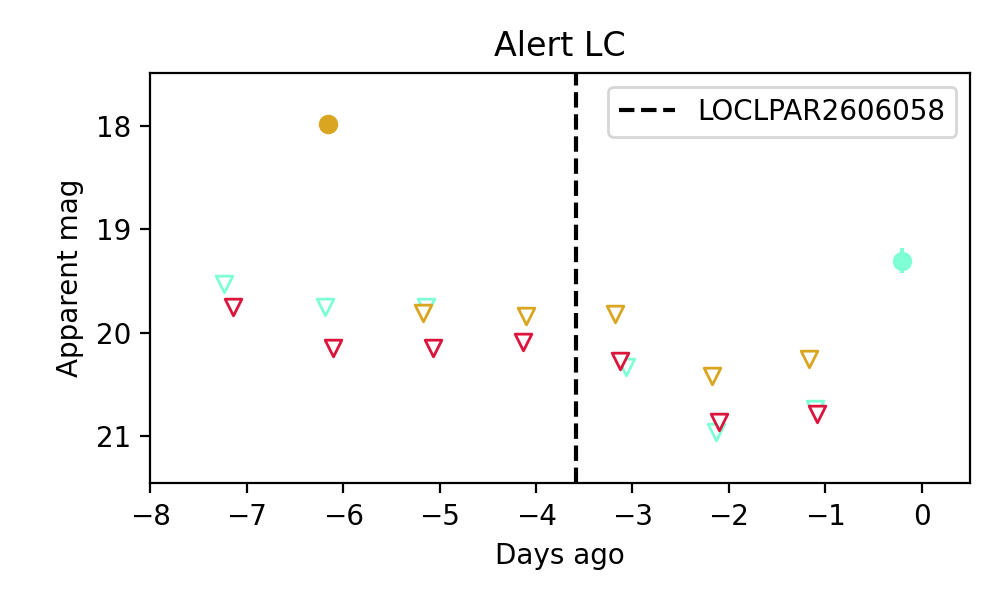
34. ZTF26abaqoux (FBOT?) [Back to Top] [Share] [Trigger Swift] [Fritz ] [Lasair ]RA, Dec: 223.19407, -7.02604 14h52m46.58s, -7d-1m-33.75sGalactic (l, b): 348.03454, 44.95864 ext(g-r) = 0.107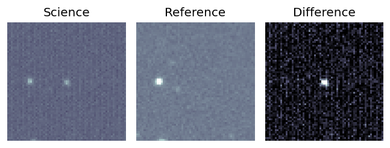
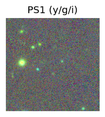
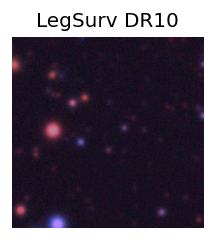
LegacySurvey: 1 sources in 3 arcsec Closest: d = 1.14 arcsec, 129.1 deg (east of north) photoz=1.12 (68% bounds 0.82, 1.68), type=REX peak abs mag = -25.48 (68% bounds -24.66, -26.56) 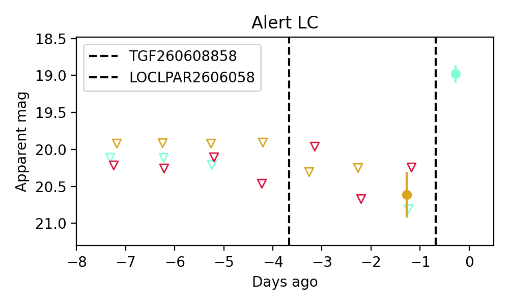
35. ZTF26abaqovs (FBOT?) [Back to Top] [Share] [Trigger Swift] [Fritz ] [Lasair ]RA, Dec: 236.53552, -3.84732 15h46m8.52s, -3d-50m-50.36sGalactic (l, b): 3.49903, 37.7084 ext(g-r) = 0.272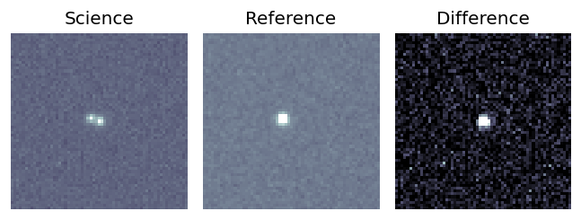
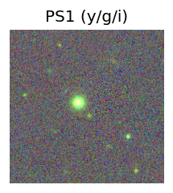
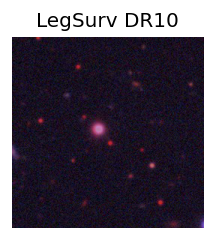
LegacySurvey: 1 sources in 3 arcsec Closest: d = 1.74 arcsec, 173.1 deg (east of north) photoz=0.91 (68% bounds 0.65, 1.12), type=REX peak abs mag = -25.29 (68% bounds -24.39, -25.84) 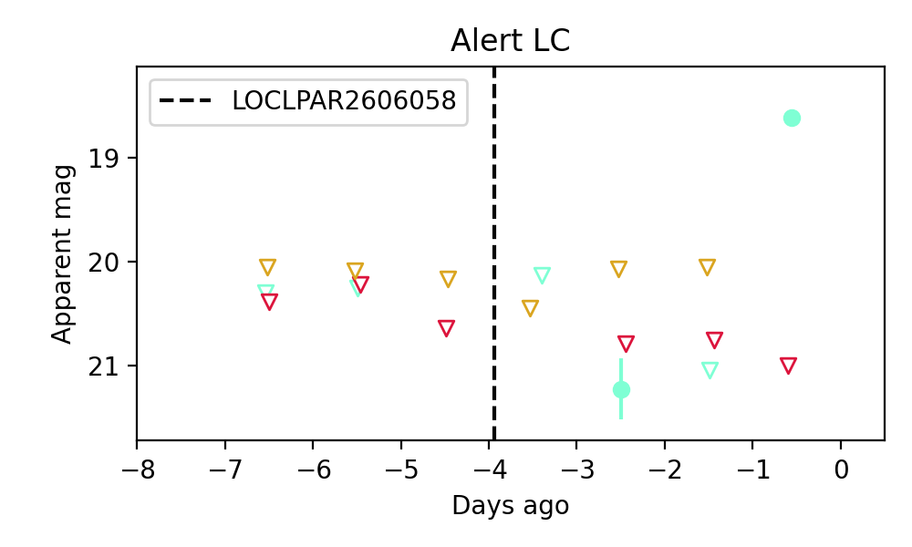
36. ZTF26abaqpxd (Afterglow?) [Back to Top] [Share] [Trigger Swift] [Fritz ] [Lasair ]RA, Dec: 227.76428, -15.87047 15h11m3.43s, -15d-52m-13.69sGalactic (l, b): 345.31722, 35.26552 WARNING: 1.86 deg from ecliptic plane ext(g-r) = 0.1LegacySurvey: 1 sources in 3 arcsec Closest: d = 4.30 arcsec, 197.9 deg (east of north) photoz=0.26 (68% bounds 0.24, 0.28), type=REX peak abs mag = -21.21 (68% bounds -20.99, -21.42)
37. ZTF26abaqpym (FBOT?) [Back to Top] [Share] [Trigger Swift] [Fritz ] [Lasair ]RA, Dec: 231.30083, -6.08795 15h25m12.20s, -6d-5m-16.61sGalactic (l, b): 356.90969, 40.14978 ext(g-r) = 0.097LegacySurvey: 1 sources in 3 arcsec Closest: d = 3.24 arcsec, 3.2 deg (east of north) photoz=0.2 (68% bounds 0.17, 0.25), type=SER peak abs mag = -21.94 (68% bounds -21.5, -22.47)
38. ZTF26abaqtnc (FBOT?) [Back to Top] [Share] [Trigger Swift] [Fritz ] [Lasair ]RA, Dec: 238.88693, -13.84929 15h55m32.86s, -13d-50m-57.44sGalactic (l, b): 356.2533, 29.3944 ext(g-r) = 0.151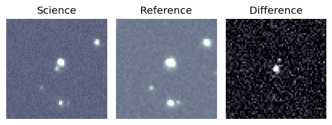
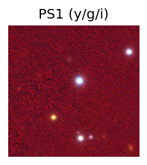
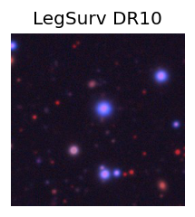
LegacySurvey: 1 sources in 3 arcsec Closest: d = 1.69 arcsec, 274.8 deg (east of north) photoz=0.55 (68% bounds 0.38, 0.7), type=DEV peak abs mag = -23.83 (68% bounds -22.9, -24.5) 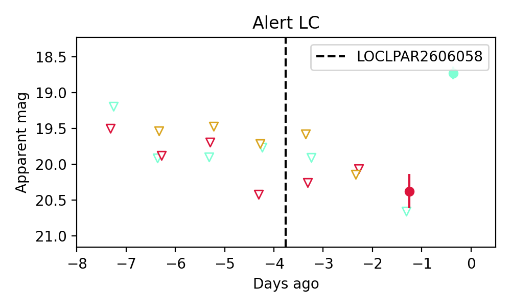
39. ZTF26abaqybz (FBOT?) [Back to Top] [Share] [Trigger Swift] [Fritz ] [Lasair ]RA, Dec: 244.66569, 7.12726 16h18m39.77s, 7d 7m38.13sGalactic (l, b): 20.68049, 37.05803 ext(g-r) = 0.071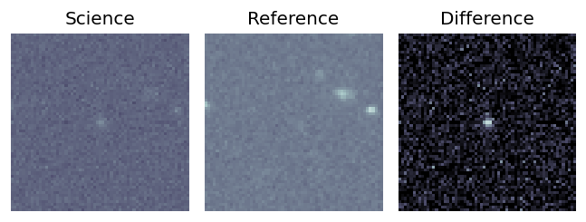
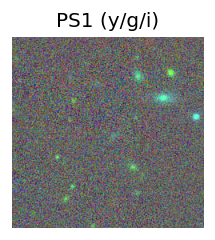
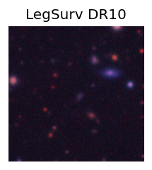
peak abs mag = -21.31 LegacySurvey: 1 sources in 3 arcsec Closest: d = 2.39 arcsec, 230.0 deg (east of north) photoz=0.17 (68% bounds 0.13, 0.24), type=SER peak abs mag = -19.49 (68% bounds -18.82, -20.3)
40. ZTF26abaqzvg (FBOT?) [Back to Top] [Share] [Trigger Swift] [Fritz ] [Lasair ]RA, Dec: 265.2296, -15.95914 17h40m55.10s, -15d-57m-32.92sGalactic (l, b): 10.542, 7.6884 ext(g-r) = 0.452PS1: 1 source in 3 arcsec Closest: d = 1.63 arcsec photoz=0.10+/-0.12 peak abs mag = -20.62
41. ZTF26abardjo (FBOT?) [Back to Top] [Share] [Trigger Swift] [Fritz ] [Lasair ]RA, Dec: 238.76007, -15.30693 15h55m2.42s, -15d-18m-24.94sGalactic (l, b): 354.9397, 28.48975 WARNING: 4.92 deg from ecliptic plane ext(g-r) = 0.201LegacySurvey: 1 sources in 3 arcsec Closest: d = 1.97 arcsec, 142.7 deg (east of north) photoz=0.63 (68% bounds 0.48, 0.94), type=PSF peak abs mag = -25.08 (68% bounds -24.4, -26.15)
42. ZTF26abardsb (FBOT?) [Back to Top] [Share] [Trigger Swift] [Fritz ] [Lasair ]RA, Dec: 242.0072, -18.74019 16h 8m1.73s, -18d-44m-24.67sGalactic (l, b): 354.49983, 23.87804 WARNING: 2.17 deg from ecliptic plane ext(g-r) = 0.476LegacySurvey: 1 sources in 3 arcsec Closest: d = 2.73 arcsec, 111.2 deg (east of north) photoz=0.31 (68% bounds 0.06, 0.77), type=PSF peak abs mag = -21.47 (68% bounds -17.6, -23.78)
43. ZTF26abareca (Afterglow?) [Back to Top] [Share] [Trigger Swift] [Fritz ] [Lasair ]RA, Dec: 233.28771, -13.72347 15h33m9.05s, -13d-43m-24.50sGalactic (l, b): 351.89584, 33.36422 ext(g-r) = 0.167LegacySurvey: 1 sources in 3 arcsec Closest: d = 8.24 arcsec, 42.0 deg (east of north) photoz=0.28 (68% bounds 0.11, 1.65), type=PSF peak abs mag = -22.28 (68% bounds -20.04, -26.93)
44. ZTF26abaretv (Afterglow?) [Back to Top] [Share] [Trigger Swift] [Fritz ] [Lasair ]RA, Dec: 240.65277, -17.5816 16h 2m36.66s, -17d-34m-53.78sGalactic (l, b): 354.47271, 25.60948 WARNING: 3.06 deg from ecliptic plane ext(g-r) = 0.355
45. ZTF26abarfht (Afterglow?FBOT?) [Back to Top] [Share] [Trigger Swift] [Fritz ] [Lasair ]RA, Dec: 231.69986, -1.89773 15h26m47.97s, -1d-53m-51.82sGalactic (l, b): 1.40982, 42.66635 ext(g-r) = 0.179LegacySurvey: 1 sources in 3 arcsec Closest: d = 2.29 arcsec, 356.3 deg (east of north) photoz=0.45 (68% bounds 0.21, 0.88), type=PSF peak abs mag = -23.34 (68% bounds -21.37, -25.1)
46. ZTF26abarfir (FBOT?) [Back to Top] [Share] [Trigger Swift] [Fritz ] [Lasair ]RA, Dec: 235.32539, -16.594 15h41m18.09s, -16d-35m-38.41sGalactic (l, b): 351.22969, 29.93118 WARNING: 2.95 deg from ecliptic plane ext(g-r) = 0.113peak abs mag = -21.62 LegacySurvey: 1 sources in 3 arcsec Closest: d = 3.14 arcsec, 210.3 deg (east of north) photoz=0.23 (68% bounds 0.18, 0.28), type=EXP peak abs mag = -21.57 (68% bounds -20.98, -22.11)
47. ZTF26abarfst (Afterglow?) [Back to Top] [Share] [Trigger Swift] [Fritz ] [Lasair ]RA, Dec: 232.51532, -9.39841 15h30m3.68s, -9d-23m-54.29sGalactic (l, b): 354.94461, 36.97993 ext(g-r) = 0.16LegacySurvey: 1 sources in 3 arcsec Closest: d = 3.77 arcsec, 271.2 deg (east of north) photoz=0.04 (68% bounds 0.01, 0.48), type=PSF peak abs mag = -17.89 (68% bounds -14.93, -23.98) Consistent with synchrotron, g-r>0!
48. ZTF26abarfwb (FBOT?) [Back to Top] [Share] [Trigger Swift] [Fritz ] [Lasair ]RA, Dec: 230.28212, -16.12395 15h21m7.71s, -16d-7m-26.23sGalactic (l, b): 347.38444, 33.52963 WARNING: 2.24 deg from ecliptic plane ext(g-r) = 0.122LegacySurvey: 1 sources in 3 arcsec Closest: d = 0.59 arcsec, 68.0 deg (east of north) photoz=1.25 (68% bounds 1.0, 1.64), type=REX peak abs mag = -25.96 (68% bounds -25.35, -26.68)
49. ZTF26abarggo (FBOT?) [Back to Top] [Share] [Trigger Swift] [Fritz ] [Lasair ]RA, Dec: 229.2416, -27.3168 15h16m57.98s, -27d-19m-0.47sGalactic (l, b): 338.58887, 25.29962 ext(g-r) = 0.232LegacySurvey: 1 sources in 3 arcsec Closest: d = 3.40 arcsec, 350.2 deg (east of north) photoz=0.11 (68% bounds 0.03, 0.29), type=PSF peak abs mag = -19.76 (68% bounds -16.71, -22.17)
50. ZTF26abargxo (Afterglow?) [Back to Top] [Share] [Trigger Swift] [Fritz ] [Lasair ]RA, Dec: 235.58569, -20.23574 15h42m20.57s, -20d-14m-8.67sGalactic (l, b): 348.59157, 27.11115 WARNING: -0.54 deg from ecliptic plane ext(g-r) = 0.152LegacySurvey: 1 sources in 3 arcsec Closest: d = 5.09 arcsec, 358.7 deg (east of north) photoz=0.32 (68% bounds 0.13, 1.42), type=PSF peak abs mag = -23.84 (68% bounds -21.58, -27.72)
51. ZTF26abarhzu (FBOT?) [Back to Top] [Share] [Trigger Swift] [Fritz ] [Lasair ]RA, Dec: 220.4094, -7.64661 14h41m38.26s, -7d-38m-47.80sGalactic (l, b): 344.37865, 46.1685 ext(g-r) = 0.07LegacySurvey: 1 sources in 3 arcsec Closest: d = 1.47 arcsec, 253.5 deg (east of north) photoz=0.61 (68% bounds 0.47, 0.93), type=REX peak abs mag = -23.59 (68% bounds -22.9, -24.7)
52. ZTF26abarldo (FBOT?) [Back to Top] [Share] [Trigger Swift] [Fritz ] [Lasair ]RA, Dec: 228.65527, -12.07735 15h14m37.27s, -12d-4m-38.46sGalactic (l, b): 349.16341, 37.62501 ext(g-r) = 0.117peak abs mag = -23.72 LegacySurvey: 1 sources in 3 arcsec Closest: d = 2.71 arcsec, 106.6 deg (east of north) photoz=0.41 (68% bounds 0.33, 0.51), type=EXP peak abs mag = -24.13 (68% bounds -23.59, -24.71)
53. ZTF26abarnoc (FBOT?) [Back to Top] [Share] [Trigger Swift] [Fritz ] [Lasair ]RA, Dec: 247.38748, -10.39293 16h29m33.00s, -10d-23m-34.56sGalactic (l, b): 5.21701, 25.19706 ext(g-r) = 0.332peak abs mag = -27.13
54. ZTF26abarofg (Afterglow?) [Back to Top] [Share] [Trigger Swift] [Fritz ] [Lasair ]RA, Dec: 251.42288, -7.12706 16h45m41.49s, -7d-7m-37.41sGalactic (l, b): 10.67959, 23.82954 ext(g-r) = 0.434
55. ZTF26abarrek (FBOT?) [Back to Top] [Share] [Trigger Swift] [Fritz ] [Lasair ]RA, Dec: 259.86739, -1.811 17h19m28.17s, -1d-48m-39.59sGalactic (l, b): 20.30349, 19.45394 ext(g-r) = 0.485PS1: 1 source in 3 arcsec Closest: d = 0.62 arcsec photoz=0.09+/-0.01 peak abs mag = -19.72 Consistent with synchrotron, g-r>0!
56. ZTF26abarrmr (FBOT?) [Back to Top] [Share] [Trigger Swift] [Fritz ] [Lasair ]RA, Dec: 267.80797, 4.16886 17h51m13.91s, 4d10m7.90sGalactic (l, b): 29.75841, 15.28707 ext(g-r) = 0.242peak abs mag = -22.98
57. ZTF26abarvcq (FBOT?) [Back to Top] [Share] [Trigger Swift] [Fritz ] [Lasair ]RA, Dec: 259.09236, -19.2374 17h16m22.17s, -19d-14m-14.63sGalactic (l, b): 4.55582, 10.86035 WARNING: 3.81 deg from ecliptic plane ext(g-r) = 0.355PS1: 1 source in 3 arcsec Closest: d = 2.98 arcsec photoz=0.06+/-0.00 peak abs mag = -19.83
58. ZTF26abasbby (Afterglow?FBOT?) [Back to Top] [Share] [Trigger Swift] [Fritz ] [Lasair ]RA, Dec: 293.18048, 6.37494 19h32m43.31s, 6d22m29.80sGalactic (l, b): 43.36374, -6.19064 ext(g-r) = 0.388PS1: 1 source in 3 arcsec Closest: d = 0.91 arcsec photoz=0.19+/-0.01 peak abs mag = -21.75 Consistent with synchrotron, g-r>0!
59. ZTF26abasbpf (FBOT?) [Back to Top] [Share] [Trigger Swift] [Fritz ] [Lasair ]RA, Dec: 246.83424, -18.17299 16h27m20.22s, -18d-10m-22.76sGalactic (l, b): 358.21657, 20.80043 WARNING: 3.51 deg from ecliptic plane ext(g-r) = 0.536LegacySurvey: 1 sources in 3 arcsec Closest: d = 1.62 arcsec, 85.9 deg (east of north) photoz=2.53 (68% bounds 1.71, 2.96), type=PSF peak abs mag = -29.72 (68% bounds -28.68, -30.12)
60. ZTF26abasceh (Afterglow?) [Back to Top] [Share] [Trigger Swift] [Fritz ] [Lasair ]RA, Dec: 252.72973, -20.53427 16h50m55.13s, -20d-32m-3.36sGalactic (l, b): 359.90497, 14.9757 WARNING: 1.94 deg from ecliptic plane ext(g-r) = 0.61
61. ZTF26abasdgq (FBOT?) [Back to Top] [Share] [Trigger Swift] [Fritz ] [Lasair ]RA, Dec: 238.45379, -8.10697 15h53m48.91s, -8d-6m-25.09sGalactic (l, b): 0.96462, 33.52 ext(g-r) = 0.211LegacySurvey: 1 sources in 3 arcsec Closest: d = 0.74 arcsec, 180.6 deg (east of north) photoz=1.18 (68% bounds 0.83, 1.42), type=PSF peak abs mag = -26.08 (68% bounds -25.16, -26.58)
62. ZTF26abasdif (FBOT?) [Back to Top] [Share] [Trigger Swift] [Fritz ] [Lasair ]RA, Dec: 238.68648, -15.34548 15h54m44.76s, -15d-20m-43.74sGalactic (l, b): 354.85235, 28.51485 WARNING: 4.87 deg from ecliptic plane ext(g-r) = 0.196LegacySurvey: 1 sources in 3 arcsec Closest: d = 1.38 arcsec, 135.0 deg (east of north) photoz=1.01 (68% bounds 0.85, 1.18), type=REX peak abs mag = -25.03 (68% bounds -24.57, -25.45)
63. ZTF26abaseeg (FBOT?) [Back to Top] [Share] [Trigger Swift] [Fritz ] [Lasair ]RA, Dec: 235.44416, -8.92415 15h41m46.60s, -8d-55m-26.96sGalactic (l, b): 357.83728, 35.21252 ext(g-r) = 0.15LegacySurvey: 1 sources in 3 arcsec Closest: d = 4.26 arcsec, 324.5 deg (east of north) photoz=0.09 (68% bounds 0.01, 0.48), type=PSF peak abs mag = -19.35 (68% bounds -15.02, -23.49)
64. ZTF26abaseuu (Afterglow?) [Back to Top] [Share] [Trigger Swift] [Fritz ] [Lasair ]RA, Dec: 246.64761, -10.39479 16h26m35.43s, -10d-23m-41.24sGalactic (l, b): 4.73083, 25.77756 ext(g-r) = 0.374
65. ZTF26abasisf (FBOT?) [Back to Top] [Share] [Trigger Swift] [Fritz ] [Lasair ]RA, Dec: 259.17072, 12.24327 17h16m40.97s, 12d14m35.77sGalactic (l, b): 33.55296, 26.49588 ext(g-r) = 0.175LegacySurvey: 1 sources in 3 arcsec Closest: d = 1.70 arcsec, 22.0 deg (east of north) photoz=1.03 (68% bounds 0.84, 1.18), type=PSF peak abs mag = -25.01 (68% bounds -24.46, -25.37)
66. ZTF26abasuis (Afterglow?FBOT?) [Back to Top] [Share] [Trigger Swift] [Fritz ] [Lasair ]RA, Dec: 277.01099, -11.49697 18h28m2.64s, -11d-29m-49.08sGalactic (l, b): 20.05127, -0.11553 ext(g-r) = 24.828PS1: 1 source in 3 arcsec Closest: d = 1.48 arcsec photoz=0.51+/-0.61 peak abs mag = -75.56